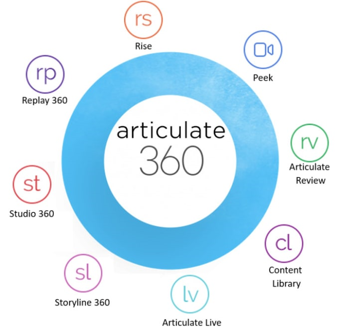
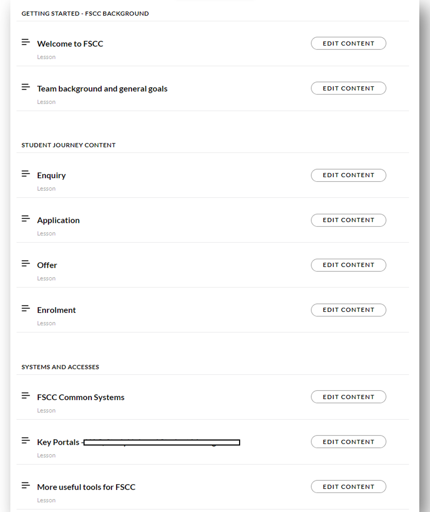

Deliver Systems and Processes trainings - Create onboarding material using Articulate 360
In the role of a Student Services consultant and then Team Leader of Student Services team, I realize that the Student Services staff members encountered several challenges that hindered their efficiency and performance.
One of the primary challenges faced by our team revolves around the extensive manual work and the lack of automation in our workflow, significantly hindering our efficiency levels. A prime example of this can be seen in how we handle communication from future students. Despite encountering numerous repetitive questions, we lack an automated messaging service or standardized text responses, leading to a time-consuming process of crafting individual responses for each query. Although we utilize the Oracle CRM platform, its full potential remains untapped, resulting in missed opportunities to enhance our productivity. Many CRM's features and capabilities are not fully integrated into our workflow, leading to redundant tasks and inefficient handling of student inquiries.
Another of the main obstacles was the lack of a comprehensive understanding of the various systems at UTAS, leading to difficulties in effectively assisting future students with technical issues related to admissions and initial study plans. Technical troubleshooting was a significant challenge as team members lacked the necessary instruction to handle and resolve intricate technical problems. This led to delays in responding to student inquiries and negatively impacted the overall student experience.
The team also faced knowledge retention issues as the existing training methods were not engaging or practical enough to ensure long-term learning and application. This resulted in new staff members struggling to grasp complex knowledge, work processes and use of UTAS systems, hindering their ability to provide seamless support to prospective students.
To address these challenges, I adopted a holistic approach that encompassed various aspects of training and development, including:
Build Better CRM Database and ChatGPT Integration
To address the efficiency challenges faced by our team, we took proactive measures to introduce automation and leverage artificial intelligence to streamline our processes and enhance our productivity.
One of the significant steps implemented was the creation of a collection of standard text responses within our CRM database. These responses are easily accessible through a set of hotkeys, enabling our team to quickly insert pre-approved, comprehensive replies to repetitive queries. This not only reduces the time it takes to compose each response but also ensures that every answer contains accurate information and aligns with the university's branding guidelines. By having standardized responses readily available, we maintain consistency in our communication with students, enhancing their overall experience.
Moreover, to further optimize our efficiency and response accuracy, I introduced the use of ChatGPT, an artificial intelligence-powered language model, to our team earlier this year (2023). With ChatGPT, we can now leverage advanced language processing capabilities to tackle common queries and inquiries. I took the initiative to customize the ChatGPT prompt for each OpenAI account used by our team, ensuring that the AI-generated responses adhere to our specific branding requirements and guidelines.
Through careful calibration, we achieved responses that are not only informative but also delivered in the appropriate tone and voice, aligning seamlessly with the university's branding. By avoiding artificial or made-up facts in each response, we uphold the integrity and reliability of every communication.
The implementation of these automation measures resulted in a remarkable increase in productivity. Our team's key performance indicator (KPI) for handling emails per hour rose significantly from less than 10 to a remarkable 15. This new benchmark represents a substantial improvement in our response efficiency and has set a higher standard for the team's performance.
The time-saving benefits of automation have freed up our team members to focus on more personalized interactions with students. As a result, we can now dedicate more attention to addressing unique and complex inquiries while maintaining a high level of service quality for all students.
Instructional flowchart and training - Example of Troubleshooting Integration Issue Flowchart
Recognizing the need for a comprehensive understanding of the various systems at UTAS, such as how to address integration issues between different UTAS portals, I took a proactive approach to bridge this knowledge gap within our team.
To achieve this, I spearheaded the creation of a detailed and easy-to-follow flowchart. This visual representation served as a step-by-step troubleshooting guide, outlining the precise actions to be taken at each stage and clearly identifying the appropriate points for escalation. By collaborating with subject matter experts and technical teams, I ensured that the flowchart covered all potential scenarios and provided foolproof solutions to common integration challenges.

Once the flowchart was meticulously crafted, I initiated a comprehensive training program for my team and extended it to other teams across the division. During these training sessions, I not only presented the flowchart but also conducted interactive workshops, allowing team members to actively engage with the troubleshooting process. By participating in these workshops, my team members gained practical experience in handling integration issues and became more confident in applying the solutions presented in the flowchart.
The introduction of flowcharts like the above and the accompanying training had a transformative impact on our team's understanding and approach to handling different complex UTAS systems and software. By shifting from an isolated troubleshooting approach to a more cohesive and standardized system, we witnessed a remarkable improvement in our efficiency and problem-solving capabilities. Team members were now equipped with a comprehensive reference tool that guided them through complex integration challenges.
Onboarding Training Program Using Articulate 360
As the team leader of the Student Services team, I identified the crucial requirement for a comprehensive and captivating onboarding training program. It became evident that such a program would not only facilitate a seamless transition for new team members but also serve as a valuable training refresher for our current staff. Emphasizing the significance of this initiative, I firmly believe it is the long-term solution to address the most substantial underlying challenge of knowledge retention and enhance our team's understanding and job satisfaction.
Leveraging my expertise in instructional design and my IT background, I embarked on a project to create an onboarding training program using Articulate 360, specifically Rise 360 and Storyline. The goal was to provide a virtual classroom experience that would equip new staff members with the necessary skills and knowledge to excel in their roles and provide exceptional service to future students.
During off-peak periods, I dedicated time to building an onboarding training program for the Future Student Services team using Articulate 360. This platform allowed me to create a "classroom" experience that made the onboarding process exciting, memorable, and practical for new staff members. The program was designed based on extensive research of the student lifecycle, identifying the main phases and the corresponding processes that future students go through (Enquiry - Application - Acceptance - Enrolment). Business objectives were incorporated into each stage, ensuring a seamless facilitation of students throughout their journey.
The development of the onboarding training program involved utilizing various elicitation methods such as interviews, document analysis, requirements workshops, use cases, and scenarios. This enabled me to understand the pain points of both staff members and students as end-users, ensuring that the training addressed their needs effectively. Multiple iterations of the training were tested and refined based on feedback before being officially deployed in September 2023.
The implementation of the onboarding training program using Articulate 360 yielded significant results and showcased my strengths and abilities. The program's success can be measured by the following outcomes:
- Engaging Onboarding Experience: The Articulate 360 training program provided new staff members with an immersive and interactive learning experience. This resulted in faster knowledge acquisition, increased retention, and enhanced practical application of skills.
- Seamless Facilitation of Students: The onboarding training program empowered staff members to effectively facilitate students throughout their journey. The training program equipped staff members with the necessary skills to provide exceptional service and support at every single stage of Future Student Journey at UTAS.
- More efficient staff onboarding: Previously, onboarding used to be a lengthy 3-month process, and new staff members would face a steep learning curve with trial and error. Mistakes were common before they grasped the right processes and systems for facilitating students at UTAS. (I was once in their shoes.) However, after implementing the Articulate 360 onboarding training program, the onboarding time has significantly shortened to less than 1 month. New staff members now have a clear understanding of business objectives at each stage of the student journey and are equipped with the necessary tools and resources to excel in assisting students. Additionally, our current staff utilizes Articulate training to refresh their knowledge on complex systems and work processes. As our team expands its knowledge base, I continue to use Articulate software to build new training modules.
The successful implementation of the onboarding training program using Articulate 360 showcased my strengths and abilities in instructional design, technical expertise, and project management. By leveraging innovative technology (Articulate is probably the most innovative and best training software on the market at the moment) and utilizing various elicitation methods, I created a comprehensive and engaging training program that addressed the team's needs and facilitated a seamless onboarding experience for new staff members.
The results achieved, including improved efficiency through automation, streamlined troubleshooting, and enhanced engagement, highlight my ability to drive effective training initiatives and deliver tangible business outcomes.